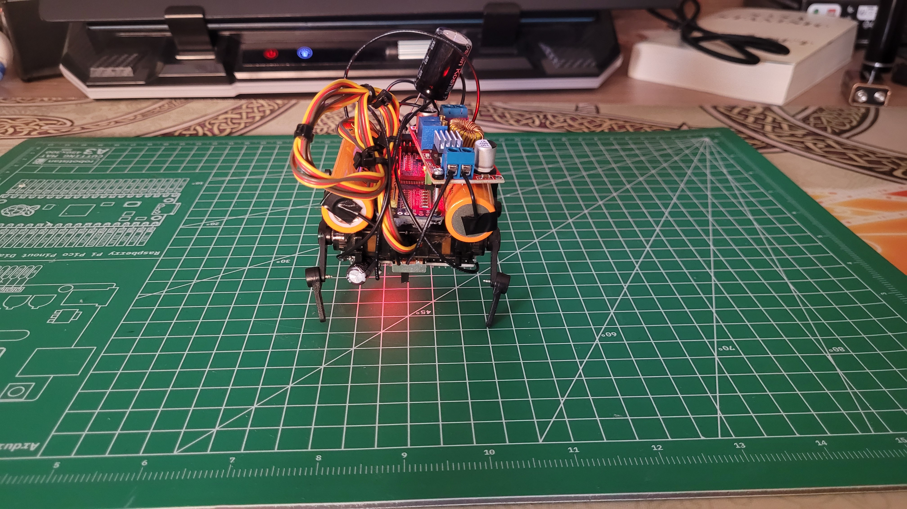

Circuits, silicon, and the software that runs on them
I'm Doruk Orak, an 18-year-old engineer in Istanbul. I design processors in Verilog, train neural networks from scratch, and build the hardware they run on.
Nine modules, sixteen instructions, written from scratch. Verified on a Tang Nano 9K FPGA and taped out through TinyTapeout — physical silicon comes back in Q4 2026.
A DDPM implemented from scratch — noising schedule, U-Net, training loop and sampler all written by hand. 6.47M parameters, exported to ONNX and generating live in your browser.

Four servos, no chassis — just silicone and duct tape holding the frame together. Walks under Xbox control over Bluetooth, with the full power stage and I2C wiring documented.
Eight search algorithms — BFS, DFS, Dijkstra, A*, Greedy and three bidirectional variants — racing across real street networks pulled live from OpenStreetMap across twelve cities.
I'm a 12th grade student at St. Georg Austrian High School in Istanbul, heading to TU München to read Electrical Engineering and Information Technology. My work sits where intelligent systems meet physical circuits: processor design, embedded hardware, and machine learning implemented from the mathematics up rather than called from a library.